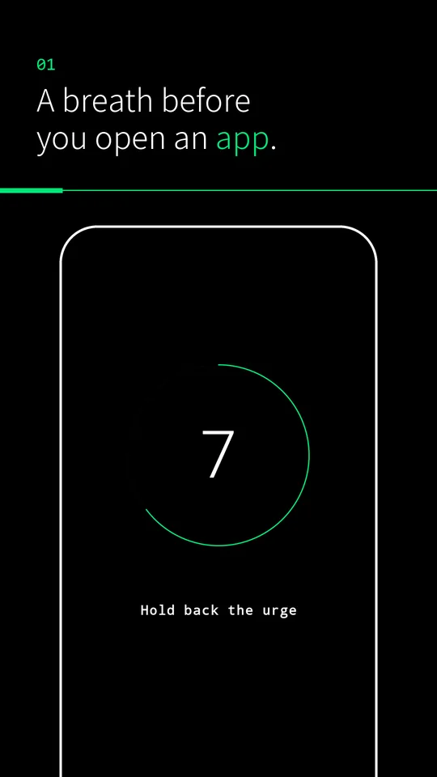
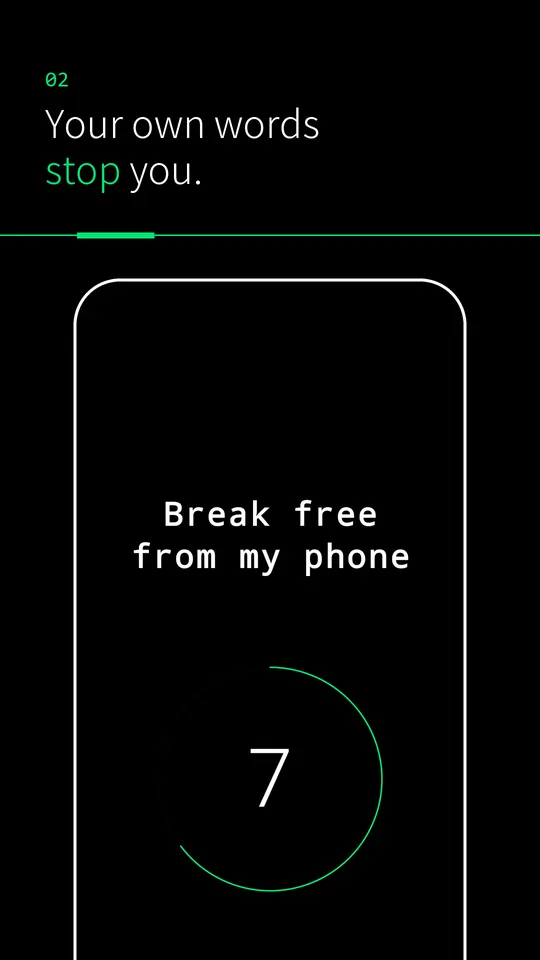
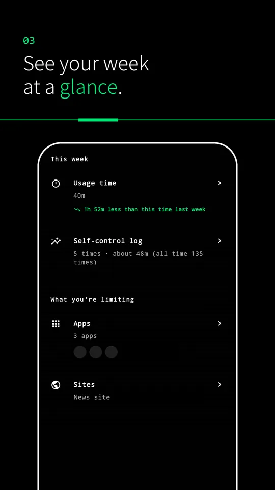
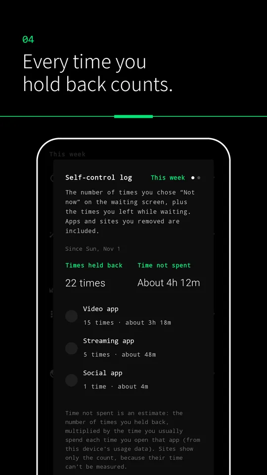
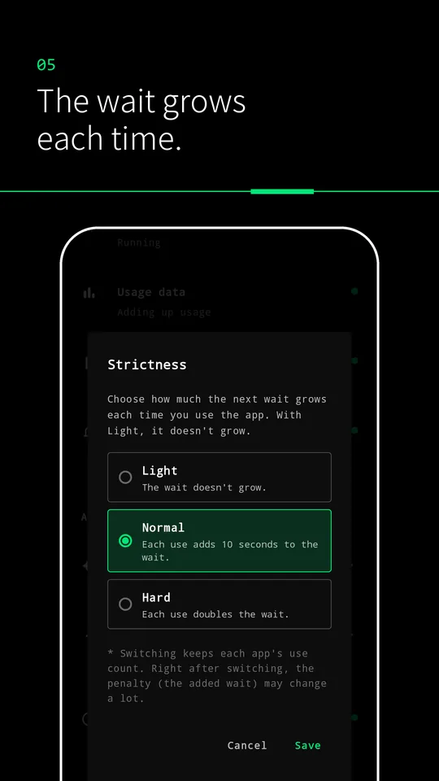
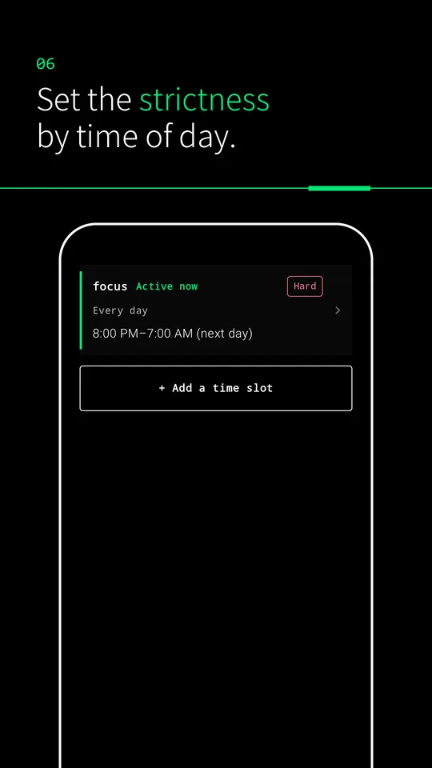
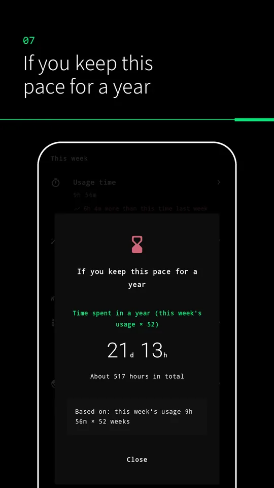

Anti-Dopa
Anti-Dopa puts a short wait in front of the apps you are about to open, so you can stop mindless use yourself.

What it does
- It limits the apps and websites you choose.
- It helps you reflect on each use.
- It shows how much time you spend.
Screens






Pricing
Free (with in-app purchases)
Premium plan: USD 3.99/month or USD 23.99/year in the US
Anti-Dopa is free to use, and you can restrict 1 app and 1 website. With Premium (USD 3.99/month or USD 23.99/year), you can restrict as many apps and websites as you want, and you can also choose the strictness, set it by time of day, and use the Which app quiz. Prices, including any taxes, are shown in Google Play in your local currency. Premium renews automatically, and you can cancel anytime under Subscriptions in Google Play. Payment is handled by Google Play, and Premium starts right after you sign up.